Medium Transmission Line
The transmission line having its effective length more than 80 km but less than 250 km, is generally referred to as a medium transmission line. Due to the line length being considerably high, admittance Y of the network does play a role in calculating the effective circuit parameters, unlike in the case of short transmission lines. For this reason the modelling of a medium length transmission line is done using lumped shunt admittance along with the lumped impedance in series to the circuit.
These lumped parameters of a medium length transmission line can be represented using two different models, namely-
1)Nominal Π representation.
2)Nominal T representation.
Let’s now go into the detailed discussion of these above mentioned models.
Nominal Π Representation of a Medium Transmission Line
In case of a nominal Π representation, the lumped series impedance is placed at the middle of the circuit where as the shunt admittances are at the ends. As we can see from the diagram of the Π network below, the total lumped shunt admittance is divided into 2 equal halves, and each half with value Y ⁄ 2 is placed at both the sending and the receiving end while the entire circuit impedance is between the two. The shape of the circuit so formed resembles that of a symbol Π, and for this reason it is known as the nominal Π representation of a medium transmission line. It is mainly used for determining the general circuit parameters and performing load flow analysis.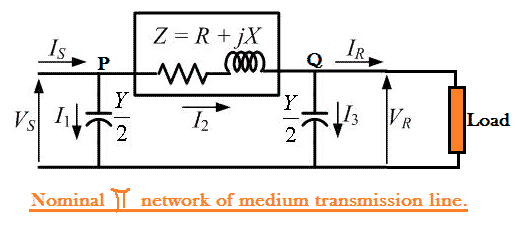
As we can see here, VS and VR is the supply and receiving end voltages respectively, and
Is is the electric current flowing through the supply end.
IR is the electric current flowing through the receiving end of the circuit.
I1 and I3 are the values of currents flowing through the admittances. And
I2 is the electric current through the impedance Z.
Now applying KCL, at node P, we get.
Similarly applying KCL, to node Q.
Now substituting equation (2) to equation (1)
Now by applying KVL to the circuit,
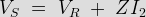
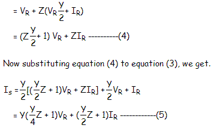
Comparing equation (4) and (5) with the standard ABCD parameter equations
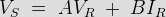
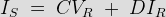
We derive the parameters of a medium transmission line as:
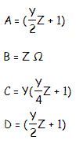
Nominal T Representation of a Medium Transmission Line
In the nominal T model of a medium transmission line the lumped shunt admittance is placed in the middle, while the net series impedance is divided into two equal halves and and placed on either side of the shunt admittance. The circuit so formed resembles the symbol of a capital T, and hence is known as the nominal T network of a medium length transmission line and is shown in the diagram below.
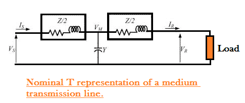
Here also Vs and Vr is the supply and receiving end voltages respectively, and
Is is the electric current flowing through the supply end.
Ir is the electric current flowing through the receiving end of the circuit.
Let M be a node at the midpoint of the circuit, and the drop at M, be given by Vm.
Applying KVL to the above network we get,
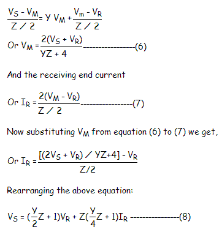
Now the sending end electric current is,
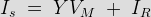............(9)
Substituting the value of VM to equation (9) we get,
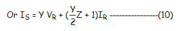
Again comparing equation (8) and (10) with the standard ABCD parameter equations,

The parameters of the T network of a medium transmission line are
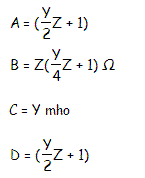
 by
by